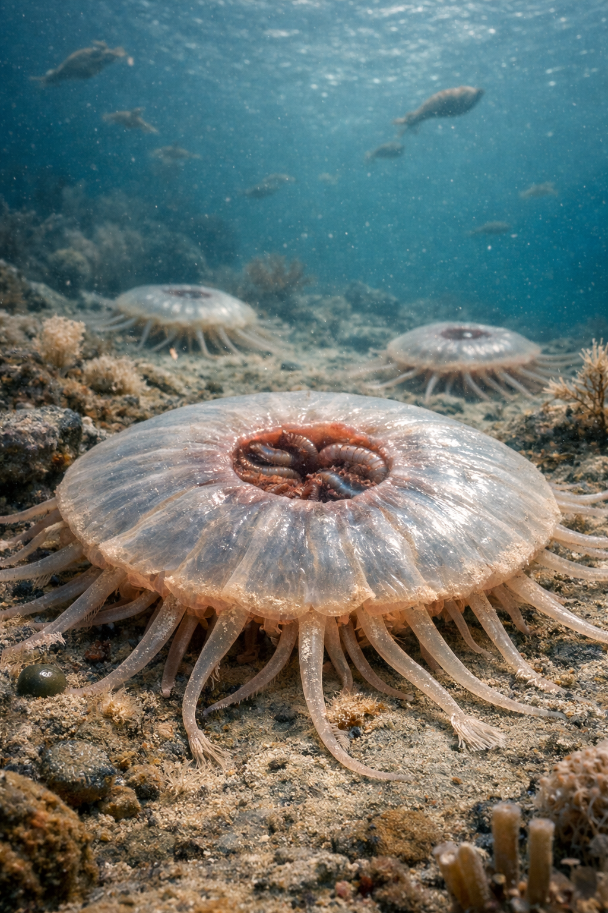
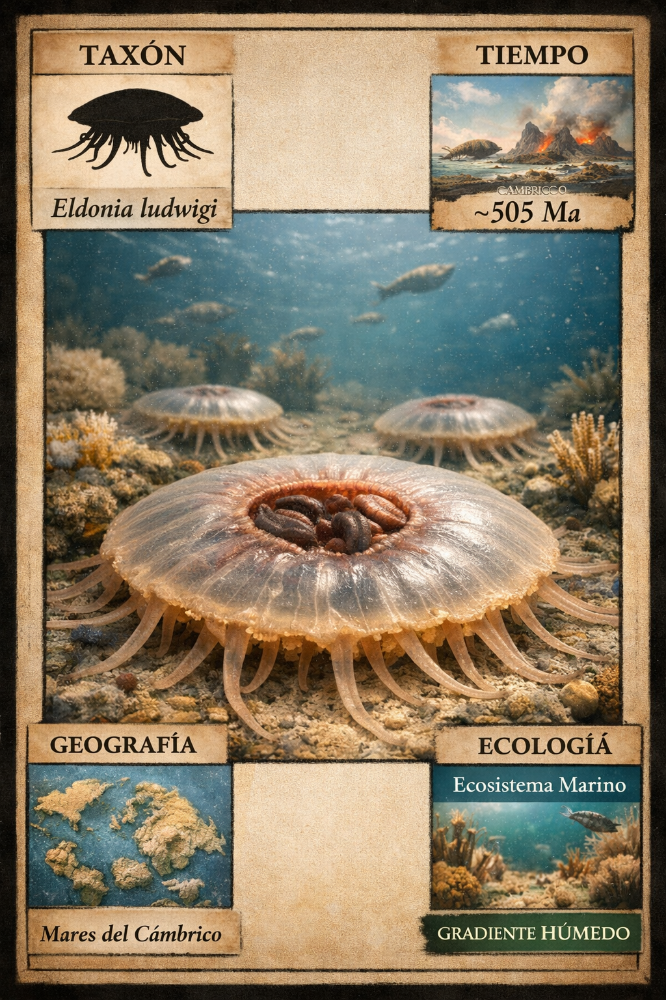
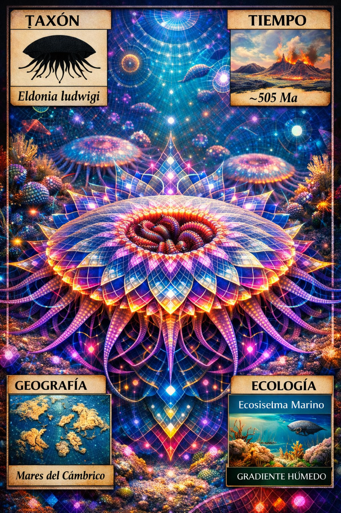

Paleoficha de Eldonia



Periodo: Cámbrico Medio
Edad: Hace aproximadamente 505 millones de años.
Dieta: Suspensívoro (filtrador de materia orgánica en suspensión).
Distribución: Formación Burgess Shale, Columbia Británica (Canadá).
TAXÓN:
Eldonia ludwigi
CLADO: Incertae sedis (posiblemente relacionado con equinodermos o lofoforados)
DIETA: Suspensívoro (filtrador de materia orgánica en suspensión)
TAMAÑO: Discoide, con diámetros de hasta 10–15 cm
LOCOMOCIÓN: Posible vida pelágica a la deriva o reposo sobre el sustrato marino.
TIEMPO:
Cámbrico Medio (Burgess Shale), aproximadamente 505 millones de años.
GEOGRAFÍA:
Formación Burgess Shale, Columbia Británica (Canadá). Talud continental del margen de Laurentia. Ambiente marino profundo con frecuentes episodios de enterramiento por corrientes de turbidez.
ECOLOGÍA:
Fitoplancton y restos de algas constituían la base de la producción primaria. Compartía el ecosistema con organismos emblemáticos de Burgess Shale como Anomalocaris y Hallucigenia. Actuaba como filtrador oportunista de plancton y nieve marina, formando en ocasiones agrupaciones densamente preservadas.
CLIMA:
Wm10 (Marino costero). Condiciones oceánicas profundas con temperaturas estables.
ESTADO ECOLÓGICO:
Estable. Organismo de anatomía singular cuyo parentesco evolutivo continúa siendo objeto de debate en la paleontología moderna.
Vídeo PalEntropía:
▶ Ver Short en YouTube